Overview, historique, fréquence, exercice, poids daté, vide et lecture précédente restent représentés par les vrais rendus du board antérieur. Les vues de détail ci-dessous gardent leur rôle de référence avant ; les versions finales figurent plus haut.
Référence UX-CAL-02 acceptée
390 pt · référence conservée, aucun nouveau rendu
 reference-ux-cal-02.png
reference-ux-cal-02.pngRéférence MOB-04 acceptée
390 pt · fichier accepté intact
 reference-mob04.png
reference-mob04.pngProgrès · vrai ConnectedApp
390 × 844 pt · AuthSession/SQLite et HTTP propriétaires réels ; route initialisée par adaptateur externe
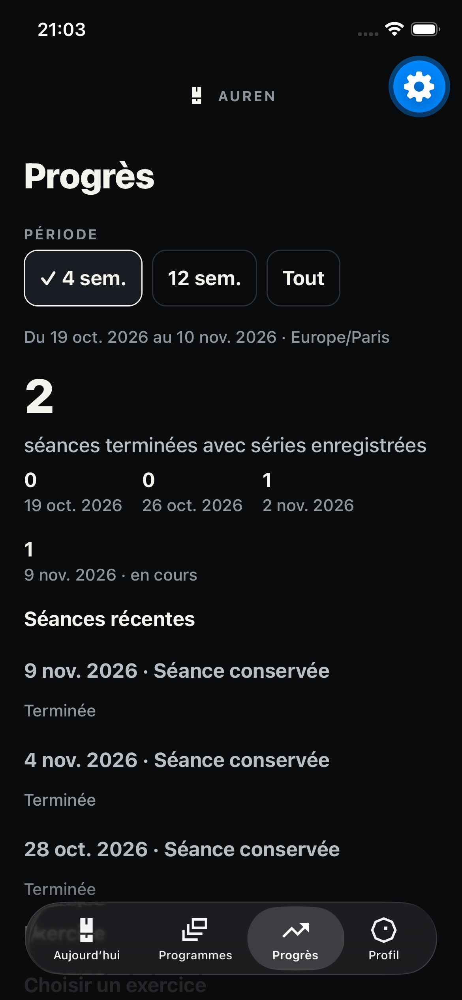
ios-connected-progress.pngSéance · faits réellement journalisés
Action AX depuis Progrès ; kilogrammes legacy saisis, contexte inconnu
ios-connected-session.pngHistorique du mouvement exact
Action AX sur référence opaque serveur ; aucun rapprochement de charge
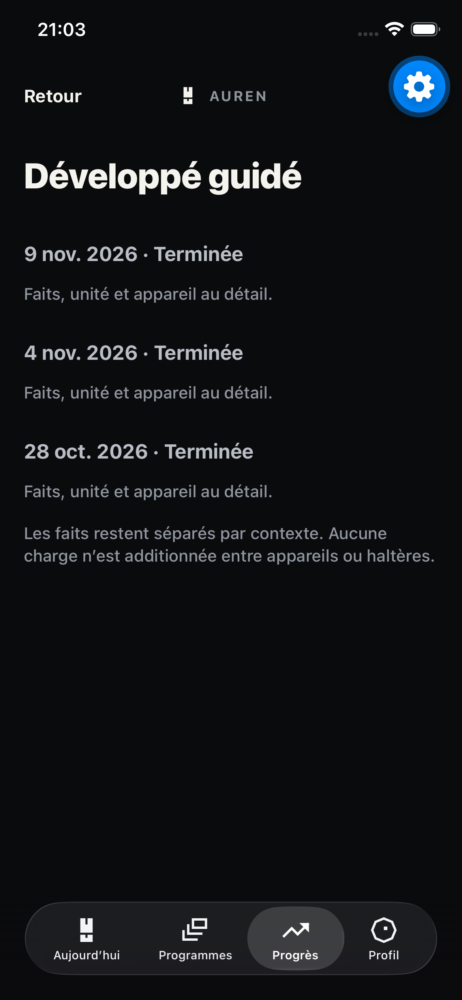
ios-connected-exercise.pngOccurrence sélectionnée
Action AX ; exercice sélectionné explicite ; 15 kg saisis/10 répétitions synthétiques
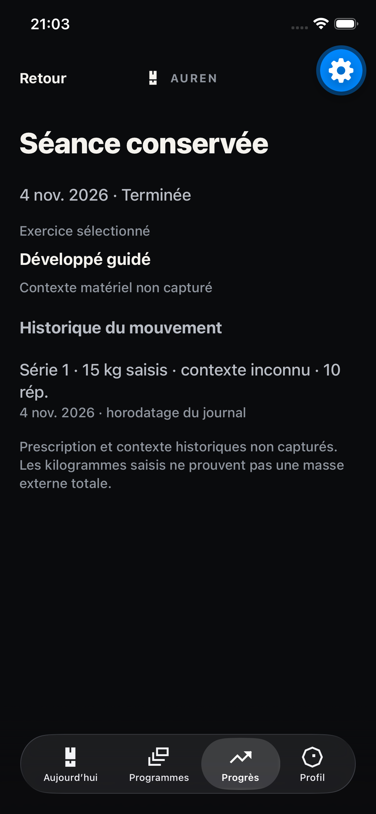
ios-connected-occurrence.pngChronologie BodyMeasurement
Même ConnectedApp ; vue basse positionnée par banc à 660 pt, pas une preuve de geste
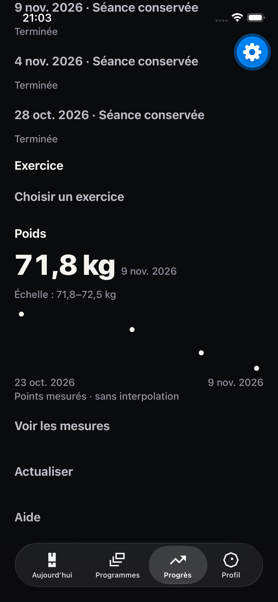
ios-connected-weight.pngCompte sans historique / accord poids absent
Autre compte synthétique ; zéro séance enregistré, aucune permission fabriquée
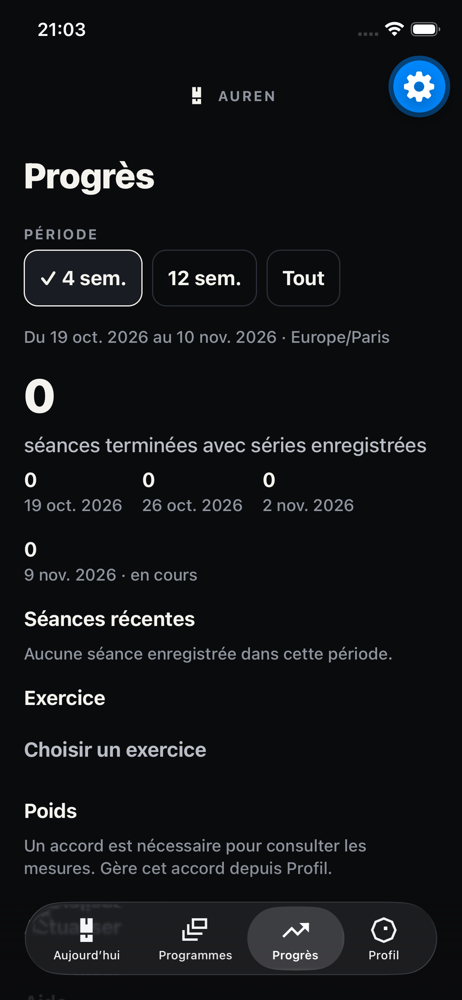
ios-connected-empty.pngProgrès · Host natif de production
360 dp · police100 % ; route/coque, AuthSession/SQLite et HTTP réels dans banc externe
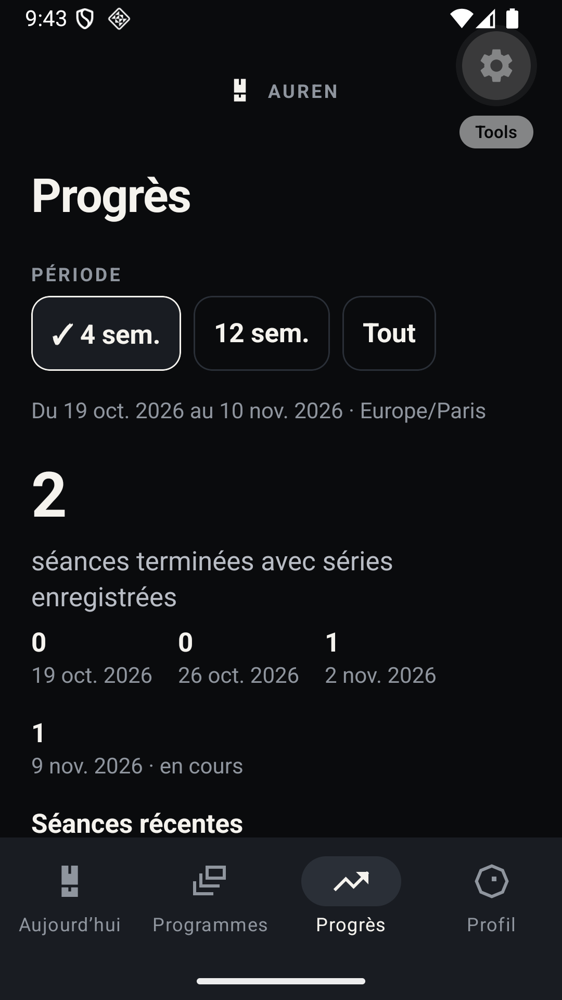
android-host-normal.pngProgrès · largeur480 dp
480 dp · police100 % ; aucun changement de token ou de baseline
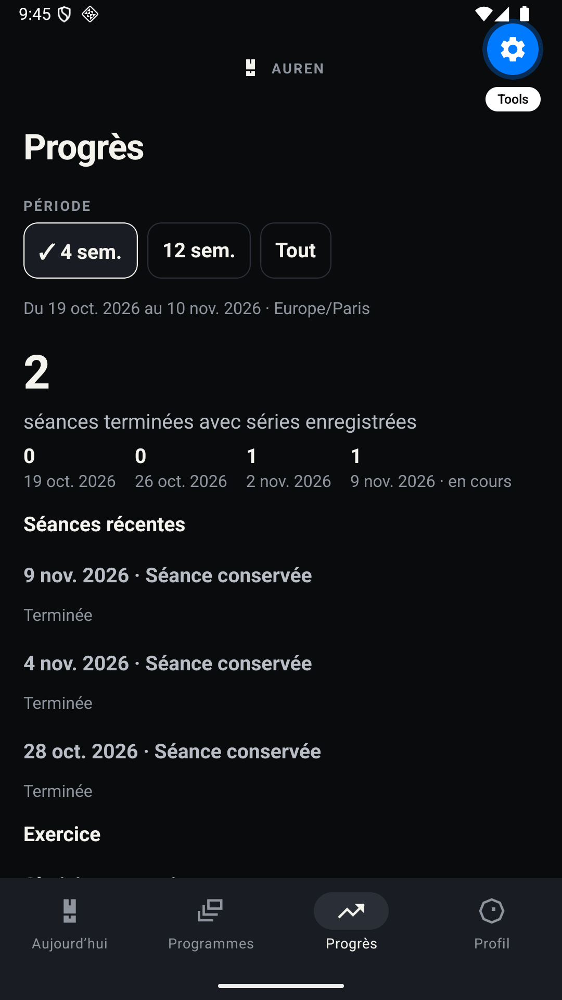
android-host-large.pngProgrès · texte130 %
360 dp · défilement nécessaire ; ancien label Programmes tronqué dans coque inchangée
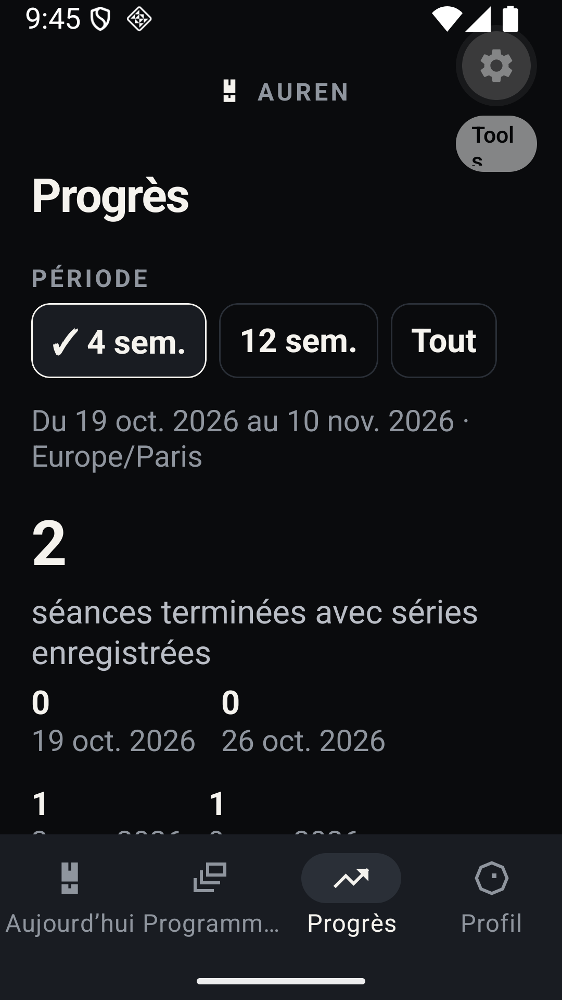
android-host-small-font.pngMesures datées · échelle réelle
360 dp · police100 % ; position640 dp ; points seuls, sans interpolation/prédiction
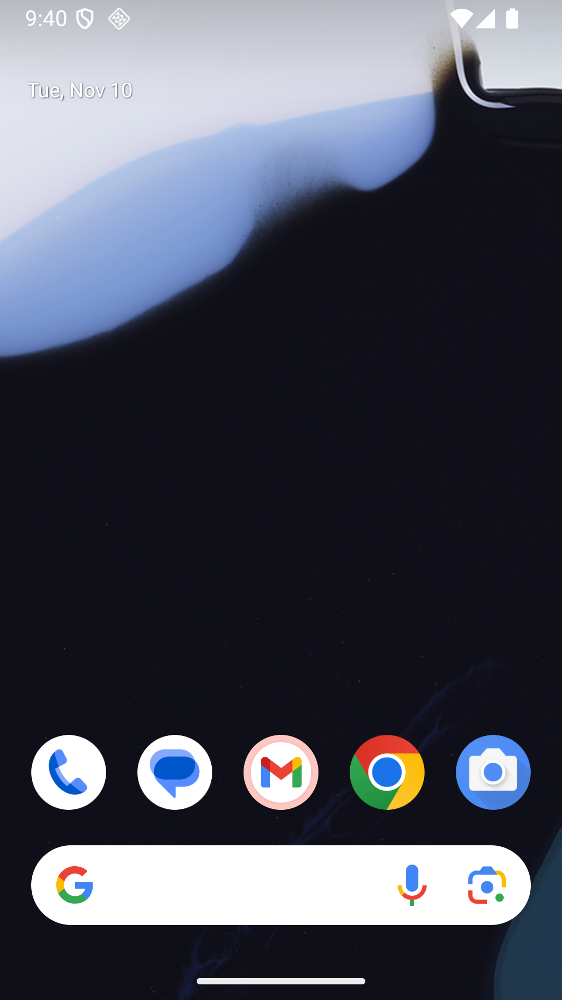
android-host-weight.pngSéance legacy · faits et contexte inconnu
Présentateur de production + vrai client HTTP ; pas un journal d’exécution actif
android-session.pngRéponse non confirmée après lecture réelle
Faute réseau du transport de banc après HTTP200 ; faits précédents conservés, actions fermées
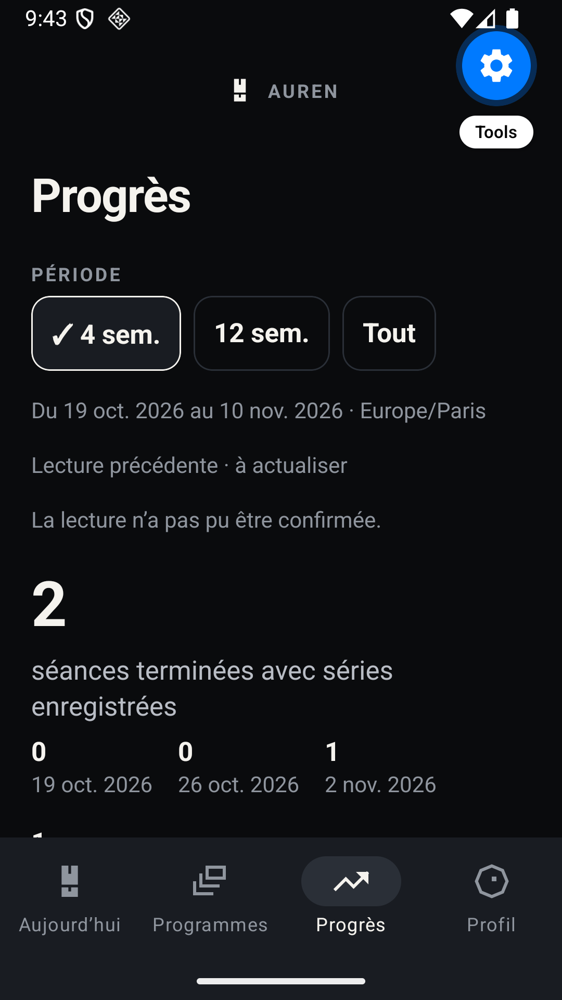
android-offline.pngHistorique d’exercice
Index et occurrences réels du même propriétaire/période ; pas de comparaison inter-appareils
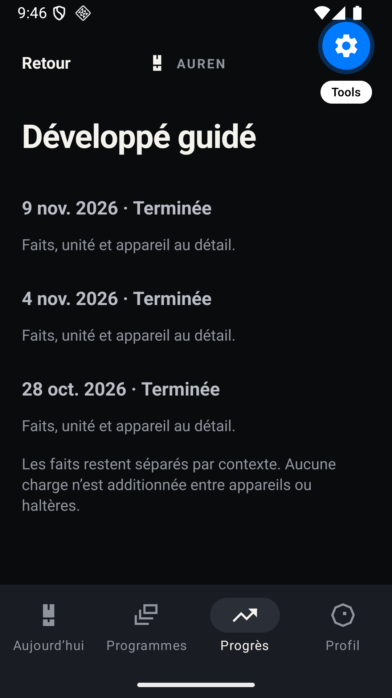
android-exercise.png